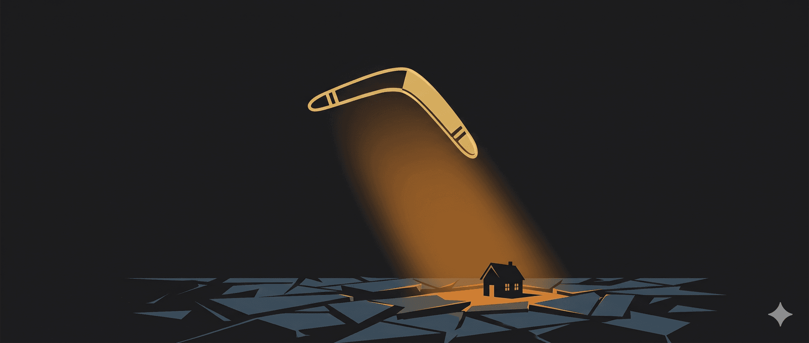

KHI “CỤC CƯNG” 30 TUỔI TỪ CHỐI TRƯỞNG THÀNH
Có một câu nói đùa kinh điển thế này: “Bạn mất 2 năm đầu đời để dạy một đứa trẻ cách đi và nói, và mất 20 năm tiếp theo để cầu xin nó ngồi xuống và ngậm miệng lại.” Nhưng hỡi ôi, đối với các bậc phụ huynh của thế kỷ 21, câu chuyện dường như có thêm phần ba: “Và bạn sẽ mất 20 năm tiếp theo nữa để cầu xin nó dọn ra khỏi nhà, tìm một công việc ổn định và tự trả tiền mạng Internet.”
Chúng ta đã lớn lên với một niềm tin nhân quả mãnh liệt (có lẽ do ảnh hưởng đôi chút từ triết lý gieo nhân gặt quả): Nếu chúng ta cho con uống đúng loại sữa bột phát triển trí não, ép chúng đi học thêm tiếng Anh từ năm 3 tuổi, thi đỗ vào những trường đại học top đầu… thì một cách logic, chúng sẽ tự động trở thành những người lớn hạnh phúc, thành đạt và độc lập.
Nhưng triết học và thực tại luôn thích chơi khăm chúng ta. Dựa trên những phân tích từ cuốn sách When Our Grown Kids Disappoint Us của Tiến sĩ Jane Adams, có một “Bí mật” (Dirty Little Secret) mà không phụ huynh nào muốn thừa nhận: Những đứa con trưởng thành đang làm chúng ta thất vọng.
Hãy cùng kéo ghế lại, nhấp một ngụm trà mạn (hoặc một ly vang nếu bạn cần tĩnh tâm), và dùng lăng kính triết học để mổ xẻ bi kịch mang đậm tính thời đại này.
Lời nói dối ngày Tết về con cái
- Con Voi Trong Phòng Khách Và Lời Nói Dối Ngày Tết
Hãy tưởng tượng một buổi họp mặt họ hàng ngày Tết. Mọi người ngồi quanh mâm cỗ, nâng ly chúc tụng. Khi được hỏi: “Cháu nhà dạo này sao rồi bác?”, tất cả chúng ta đều mỉm cười tự hào: “Cháu nó vẫn ổn, đang tìm hướng đi riêng / đang khởi nghiệp / đang trải nghiệm cuộc sống.”
Nhưng thực tế, một nửa trong số đó đang nói dối.
Họ giấu nhẹm việc cậu quý tử 28 tuổi vẫn đang đóng đô trong phòng ngủ cũ, gọi đó là “Trụ sở chính của đam mê”, nhưng thực chất là thức đến 3 giờ sáng cày game và ngủ đến trưa. Họ không kể về cô con gái 30 tuổi đã chuyển việc 5 lần trong hai năm vì “môi trường không mang lại ý nghĩa sâu sắc”, và vừa gửi hóa đơn thẻ tín dụng cho bố mẹ thanh toán.
Tại sao chúng ta phải nói dối?
Đó là bởi chúng ta đang mắc kẹt trong Ảo tưởng về Sự kiểm soát (The Illusion of Control). Các triết gia Khắc kỷ (Stoicism) từ thời cổ đại như Epictetus đã cảnh báo: Có những thứ nằm trong tầm kiểm soát của ta, và có những thứ thì không. Nhưng các bậc cha mẹ lại mắc hội chứng ái kỷ (narcissism) một cách vô thức. Chúng ta coi con cái là “sản phẩm” của mình, hay tệ hơn, là một dự án đầu tư. Nếu dự án đó thua lỗ, lỗi chắc chắn thuộc về nhà đầu tư.
Chúng ta gánh lấy một thứ mà Adams gọi là “Bảo hiểm lỗi-tại-tôi”. Nếu con ta thất bại ở tuổi 30, ta dằn vặt rằng có lẽ do năm nó 5 tuổi mình đã lỡ nặng lời, hoặc do mình đã ép nó học khối A thay vì khối D. Chúng ta thà tin rằng mình là một người làm cha mẹ tồi, còn hơn phải chấp nhận một sự thật đáng sợ hơn: Chúng ta thực sự không thể kiểm soát được cuộc đời của một người trưởng thành khác.
Thế hệ Boomerang và khủng hoảng hiện sinh
- Thế Hệ Boomerang Và Căn Bệnh Khủng Hoảng Hiện Sinh Dưới Tầng Hầm
Thế hệ trẻ ngày nay có một đặc quyền lớn: Quyền được trì hoãn sự trưởng thành. Khi đối mặt với sự phức tạp của thế giới thực – nơi mà sếp không hề vỗ tay khen ngợi chỉ vì họ “có mặt đúng giờ” như cách cha mẹ vẫn làm – họ hoảng sợ, bối rối, và… quay về nhà (Thế hệ Boomerang).
Triết gia Jean-Paul Sartre từng nói: “Con người bị kết án phải tự do.” Tức là, chúng ta phải tự tạo ra bản chất và ý nghĩa cho cuộc đời mình thông qua các lựa chọn. Tuy nhiên, những đứa trẻ của chúng ta, đứng trước quá nhiều lựa chọn tự do, đã bị tê liệt (như căn bệnh cosmopsis - sợ hãi trước các lựa chọn - trong tiểu thuyết của John Barth). Giữa việc làm nhân viên văn phòng 9-to-5, làm freelancer tự do, hay đu trend “nằm thẳng” (tang ping), chúng chọn cách… không chọn gì cả.
Và chúng ta, những bậc phụ huynh yêu con, đã làm gì? Chúng ta biến ngôi nhà thành một khách sạn 5 sao miễn phí. Chúng ta tiếp tục cung cấp tài chính để chúng “đi tìm bản ngã”. Chúng ta quên mất một định luật cơ bản: Sự độc lập là thứ không ai muốn mua nếu sự phụ thuộc đang được phát miễn phí.
Một thanh niên nói với bác sĩ tâm lý:
“Tôi bị khủng hoảng hiện sinh. Mọi thứ đều do vũ trụ an bài. Tôi không có ý chí tự do, tôi chỉ là nạn nhân của nền kinh tế suy thoái.”
Bác sĩ (theo trường phái Thực dụng) mỉm cười: “Đừng lo, bạn hoàn toàn có ý chí tự do. Bạn là thuyền trưởng của đời mình!”
Thanh niên mắt sáng rực: “Tuyệt quá! Cảm ơn bác sĩ!”
Bác sĩ: “Không có gì. Phí trị liệu hôm nay là 1 triệu đồng.”
Thanh niên nhún vai: “Tiếc quá, vũ trụ đã an bài hôm nay tôi quên ví ở nhà.”
Bác sĩ gật gù: “Không sao, vũ trụ cũng an bài tôi vừa gửi hóa đơn này cho mẹ cậu rồi.”
Như Jane Adams chỉ ra một cách sắc sảo: Trẻ không thiếu kỹ năng, chúng thiếu động lực để trưởng thành.
Nghệ thuật buông bỏ có yêu thương
- Nghệ Thuật Của Sự Buông Bỏ: Phẫu Thuật Cắt Đứt Cuống Rốn Lần Hai
Làm thế nào để thoát khỏi mớ bòng bong này? Bằng một giải pháp nghe có vẻ phũ phàng nhưng lại là hành động yêu thương sâu sắc nhất: Tách rời khỏi vấn đề của chúng, mà không tách rời khỏi chúng.
Điều này đòi hỏi một triết lý hành động mạnh mẽ. Hãy tưởng tượng bạn là một vị thiền sư. Bạn yêu thương cái cây, nhưng bạn không thể ép cái cây mọc theo hướng bạn muốn, và bạn chắc chắn không thể thay rễ cây hút nước.
Nếu đứa con 30 tuổi của bạn bị đuổi việc vì thường xuyên đi trễ, đó là bài học của nó, không phải là sự xui xẻo của bạn. Sự buông bỏ (Detachment) không phải là sự bỏ rơi. Nó là sự thừa nhận giới hạn của trách nhiệm làm cha mẹ. Nó là việc bạn nói rằng: “Bố/mẹ yêu con vô điều kiện, nhưng bố/mẹ có điều kiện với cái ví và sự bình yên của mình.”
Một bà mẹ phiền não hỏi thiền sư: “Thầy ơi, con tôi 30 tuổi rồi vẫn ở nhà ăn bám, không chịu đi làm, tối ngày chơi game. Tôi phải làm sao?”
Thiền sư đáp: “Hãy yêu thương nó vô điều kiện, như bầu trời ôm lấy mây ngàn.”
Bà mẹ than thở: “Vâng, nhưng tiền điện tháng này tăng gấp đôi rồi thầy ạ!”
Thiền sư khẽ gật đầu: “Vậy thì hãy yêu thương nó vô điều kiện… nhưng nhớ cắt cầu dao điện từ 10 giờ tối.”
Như Seneca đã chỉ ra, chúng ta không thể ngăn cơn bão ập đến với những người ta yêu thương, nhưng ta có thể để họ tự học cách đóng thuyền (bằng cách ngừng việc cứ trời mưa là mang ô ra che cho họ).
Giai đoạn hậu làm cha mẹ
- Kỷ Nguyên Hậu-Làm-Cha-Mẹ (Postparenthood): Đã Đến Lúc Thu Dọn Tàn Cuộc!
Trọng tâm thực sự của cuốn sách không nằm ở những đứa trẻ, mà nằm ở chính bạn. Bạn đã dành nửa cuộc đời để phục vụ cho “tình trạng khẩn cấp của việc làm cha mẹ” (the parental emergency). Bây giờ, khi tiếng còi báo động đã tắt, bạn lại không biết làm gì với bản thân mình.
Chúng ta thường lấy những rắc rối của con cái làm cái cớ để trì hoãn việc đối mặt với khoảng trống của chính mình. Nếu bạn bận rộn lo lắng cho sự nghiệp của con, bạn sẽ không phải đối mặt với sự tẻ nhạt trong những thú vui tuổi xế chiều của bản thân.
Nhưng hãy nhớ, cuộc đời này là hữu hạn. Bạn đã đóng xong “khoản thuế duy trì nòi giống” của mình rồi. Giai đoạn Hậu-làm-cha-mẹ là một vùng đất hứa, nơi bạn được quyền tái tạo lại bản thân, hâm nóng lại tình yêu với bạn đời, tiêu xài những đồng tiền mình kiếm được cho một chuyến du lịch Đà Lạt hay Bali, thay vì dùng nó để tài trợ cho “gap year” thứ 3 của đứa con trưởng thành.
Lời kết: tha thứ cho bản thân
Lời Kết: Chấp Nhận Sự Không Hoàn Hảo
Cuối cùng, mọi triết lý về làm cha mẹ đều dẫn đến một sự chấp nhận mang tính bi tráng. Bạn phải chấp nhận rằng con cái là những thực thể độc lập, có quyền tự do sống một cuộc đời huy hoàng, và cũng có quyền tự do… làm hỏng bét cuộc đời chúng.
Sự tha thứ (Forgiveness) ở đây không chỉ là tha thứ cho những đứa con vì chúng đã không trở thành phiên bản hoàn hảo mà bạn hằng mong đợi. Quan trọng hơn, đó là sự tha thứ cho chính bản thân bạn. Bạn đã làm tốt nhất có thể với những gì bạn có. Bạn là một bậc cha mẹ “đủ tốt” (good enough).
Vì vậy, nếu đứa con 30 tuổi của bạn vẫn đang ở trong phòng ngủ cũ, ôm cây đàn guitar và phàn nàn rằng xã hội này không hiểu nó, hãy mỉm cười. Hãy bước xuống lầu, vỗ vai nó, nói rằng bạn tin vào tiềm năng của nó, và sau đó… nhẹ nhàng đưa cho nó tờ thông báo thu tiền nhà tháng tới.
Rồi hãy quay lên lầu, pha cho mình một tách trà, đọc một cuốn sách triết học, và tận hưởng phần đời còn lại của bạn. Bởi vì, nói như những nhà Hiện sinh học: Cuộc sống này vô nghĩa đấy, nhưng nếu ta biết cách, sự vô nghĩa ấy lại là một bữa tiệc tuyệt vời!
🔍 Phân tích bài viết
📌 Tóm tắt ý chính
- Bài viết dùng lăng kính triết học (Khắc kỷ, Hiện sinh, Thực dụng) để giải mã hiện tượng “thế hệ Boomerang” — những người trưởng thành về tuổi nhưng từ chối độc lập về kinh tế và tâm lý, quay về sống nhờ cha mẹ.
- Gốc rễ vấn đề nằm ở cả hai phía: cha mẹ nhầm lẫn con cái là “dự án đầu tư” (ảo tưởng kiểm soát), còn con cái bị tê liệt trước quá nhiều lựa chọn (cosmopsis) và không có động lực trưởng thành khi sự phụ thuộc vẫn được cấp miễn phí.
- Jane Adams chỉ ra: vấn đề không phải thiếu kỹ năng mà thiếu động lực — sự độc lập sẽ không được mua nếu sự phụ thuộc đang được phát miễn phí.
- Giải pháp đề xuất: “buông bỏ có yêu thương” (detachment) — không bỏ rơi nhưng ngừng giải cứu tài chính, để hệ quả tự nhiên dạy điều mà lời khuyên không dạy được.
- Giai đoạn hậu-làm-cha-mẹ là cơ hội để bậc phụ huynh tái tạo bản thân thay vì tiếp tục dùng “rắc rối của con” làm lý do trốn tránh cuộc đời của chính mình.
🗺️ Mindmap
💡 Insight & Góc nhìn đa chiều
Xu hướng: Hiện tượng Boomerang không phải thất bại cá nhân — đây là sản phẩm có hệ thống của mô hình nuôi dưỡng bảo bọc (helicopter parenting) kết hợp với bất ổn kinh tế thật sự (nhà đắt, việc bấp bênh). Hai nguyên nhân này bị bài viết trộn lẫn theo cách dễ gây hiểu lầm.
Ai được lợi: Nhà xuất bản sách self-help (cuốn của Adams), các chuyên gia trị liệu tâm lý, và các tác giả nội dung dạy “buông bỏ” — tất cả đều kiếm tiền từ nỗi lo âu của cha mẹ trung lưu.
Điều ẩn: Bài viết ngầm định rằng mọi đứa con từ chối trưởng thành đều là lười biếng và thiếu ý chí — nhưng không đặt câu hỏi về cấu trúc kinh tế: ở các đô thị lớn như TP.HCM hay Hà Nội, với mức lương mới ra trường 7–10 triệu/tháng và giá thuê nhà 4–6 triệu, việc ở nhà cha mẹ là quyết định tài chính hợp lý, không nhất thiết là chỉ báo tâm lý bất thường.
Góc nhìn thế hệ: Thế hệ 8X-9X Việt Nam khi ra trường gặp thị trường lao động tương đối dễ chịu hơn. Gen Z gặp lạm phát, thị trường việc làm siết chặt sau COVID, và chi phí sống nhảy vọt — so sánh trực tiếp là thiên vị thế hệ.
⚖️ Phản biện
- Nhập nhằng nguyên nhân kinh tế vs tâm lý: Bài quy tất cả về “thiếu động lực” nhưng không phân biệt trường hợp có hoàn cảnh khó khăn thật sự (bệnh tật, thị trường việc làm khó, chi phí nhà ở phi thực tế) với trường hợp lười biếng thuần túy. Đây là lỗi overgeneralization nghiêm trọng.
- Thiền sư cắt cầu dao điện là ẩn dụ có vấn đề: Trong thực tế, “buông bỏ đột ngột” với người trẻ đang chịu áp lực tâm lý nặng có thể kích hoạt khủng hoảng, không phải trưởng thành. Các nghiên cứu về attachment theory cho thấy buông bỏ cần có lộ trình, không phải cắt phắt.
- Mâu thuẫn nội tại: Bài vừa ca ngợi “yêu vô điều kiện” vừa ngay lập tức nói “có điều kiện với ví tiền” — đây là hai triết lý đối lập nhau, bài không giải quyết được tension này, chỉ biến nó thành trò đùa.
- Thiên vị giai cấp: Toàn bộ framework chỉ áp dụng được với gia đình trung lưu trở lên — nơi cha mẹ CÓ nhà để con quay về, CÓ tiền để “ngừng chu cấp”. Với gia đình lao động nghèo, con cái đi làm từ 18 tuổi không phải vì triết lý Epictetus mà vì không còn lựa chọn nào khác.
❓ Câu hỏi mở
- Nếu chi phí nhà ở và sinh hoạt ở đô thị tiếp tục tăng nhanh hơn lương, điểm cân bằng nào xác định khi nào “ở nhà cha mẹ” là lựa chọn kinh tế hợp lý vs dấu hiệu tâm lý cần can thiệp?
- Liệu mô hình “buông bỏ có yêu thương” của Adams có hiệu quả tương đương ở bối cảnh Á Đông — nơi mạng lưới gia đình là hệ thống an sinh xã hội phi chính thức thay thế cho phúc lợi nhà nước còn yếu?
- Thế hệ Boomerang khi trở thành cha mẹ sẽ nuôi con theo triết lý nào — và liệu vòng lặp này có tự phá vỡ hay sẽ tái tạo theo dạng mới?
🇻🇳 Liên hệ Việt Nam
- Đặc thù VN: Ở VN, việc con cái sống cùng cha mẹ đến 25–30 tuổi (thậm chí sau khi kết hôn) là chuẩn mực văn hóa, không phải rối loạn tâm lý. Bài viết dùng lăng kính Mỹ (Adams viết cho bối cảnh Bắc Mỹ) áp vào bối cảnh VN một cách thiếu phê phán.
- Thị trường lao động: Tỷ lệ thất nghiệp thanh niên đô thị VN dao động 7–10%, cao gấp đôi mức chung. Nhiều vị trí entry-level yêu cầu 2–3 năm kinh nghiệm — tạo bẫy cấu trúc chứ không phải thiếu ý chí.
- Nhà ở: Giá căn hộ TP.HCM trung bình 60–80 triệu/m² (2024), vượt xa khả năng của người lao động trẻ. Việc ở nhà cha mẹ để tích lũy mua nhà là chiến lược tài chính, không phải từ chối trưởng thành.
- Tác động tích cực: Mô hình gia đình đa thế hệ VN thực ra giảm chi phí chăm sóc người cao tuổi (cha mẹ già được chăm sóc trực tiếp) — đây là giá trị kinh tế thật sự mà bài bỏ qua hoàn toàn.
Điều bài viết nói đúng với tôi: sự phụ thuộc êm ái sẽ không tự nhiên biến thành độc lập nếu không có áp lực bên ngoài. Công việc tại một công ty Nhật — môi trường Nhật với kỳ vọng rõ ràng, trách nhiệm cụ thể — đang tạo ra loại “áp lực có cấu trúc” đó. Không ai vỗ tay vì tôi “có mặt đúng giờ”, nhưng sự chuyên nghiệp được tích lũy từng ngày.
Điều bài chưa nói: với ba mẹ 70 tuổi ở quê, việc tôi ở gần hay xa không chỉ là vấn đề “trưởng thành độc lập” — đó là bài toán chăm sóc gia đình thật sự. Trong bối cảnh đó, câu hỏi không phải “khi nào thoát khỏi gia đình” mà là “làm sao cân bằng độc lập cá nhân với trách nhiệm gia đình”. Bài viết không có công cụ nào cho câu hỏi này.
Với kế hoạch kết hôn năm 2026: bài này nhắc nhở tôi rằng việc xây dựng nền tảng tài chính độc lập trước khi kết hôn — thay vì tiếp tục dựa vào mạng lưới gia đình — là ưu tiên cần đặt lên trước.
📖 Giải thích thuật ngữ
- Thế hệ Boomerang (Boomerang Generation): Chỉ những người trưởng thành (thường 25–35 tuổi) rời nhà đi học/đi làm rồi quay về sống với cha mẹ. Tên gọi từ hình ảnh cái boomerang ném đi rồi bay lại.
- Cosmopsis: Thuật ngữ từ văn học (John Barth), chỉ sự tê liệt khi đối mặt với quá nhiều lựa chọn. Ví dụ đời thường: đứng trước thực đơn 50 món, không chọn được món nào, cuối cùng bỏ về nhà nhịn đói.
- Detachment (Buông bỏ): Trong tâm lý học và triết học Phật giáo, là khả năng quan tâm đến ai đó mà không bị cuốn vào kết quả của họ. Khác với thờ ơ (indifference) — bạn vẫn yêu thương, nhưng không chịu trách nhiệm thay cho họ.
- Hội chứng ái kỷ (Narcissism) vô thức: Khi cha mẹ vô thức xem thành công/thất bại của con là phản chiếu trực tiếp giá trị bản thân mình — không phải vì tự cao mà vì quá gắn kết cảm xúc.
- Good enough parent (Cha mẹ “đủ tốt”): Khái niệm của nhà tâm lý học D.W. Winnicott — cha mẹ không cần hoàn hảo, chỉ cần “đủ tốt” để con phát triển khả năng chịu đựng thất vọng và tự điều chỉnh.